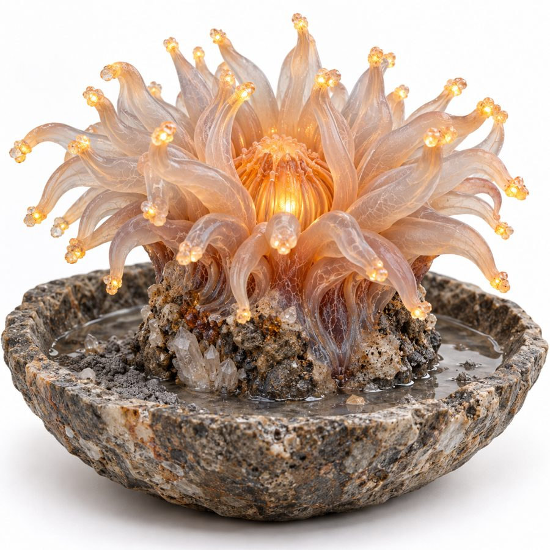
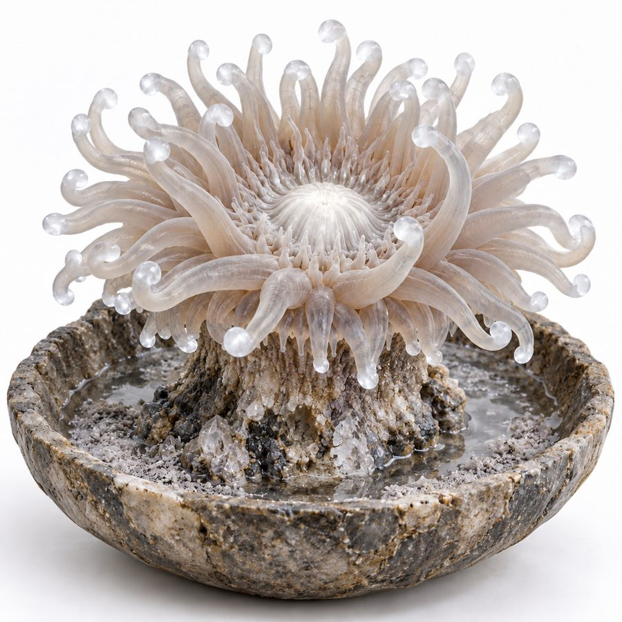
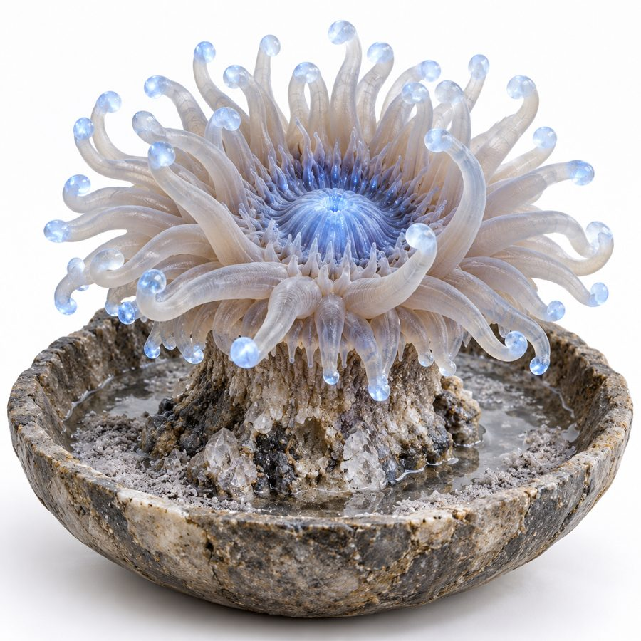
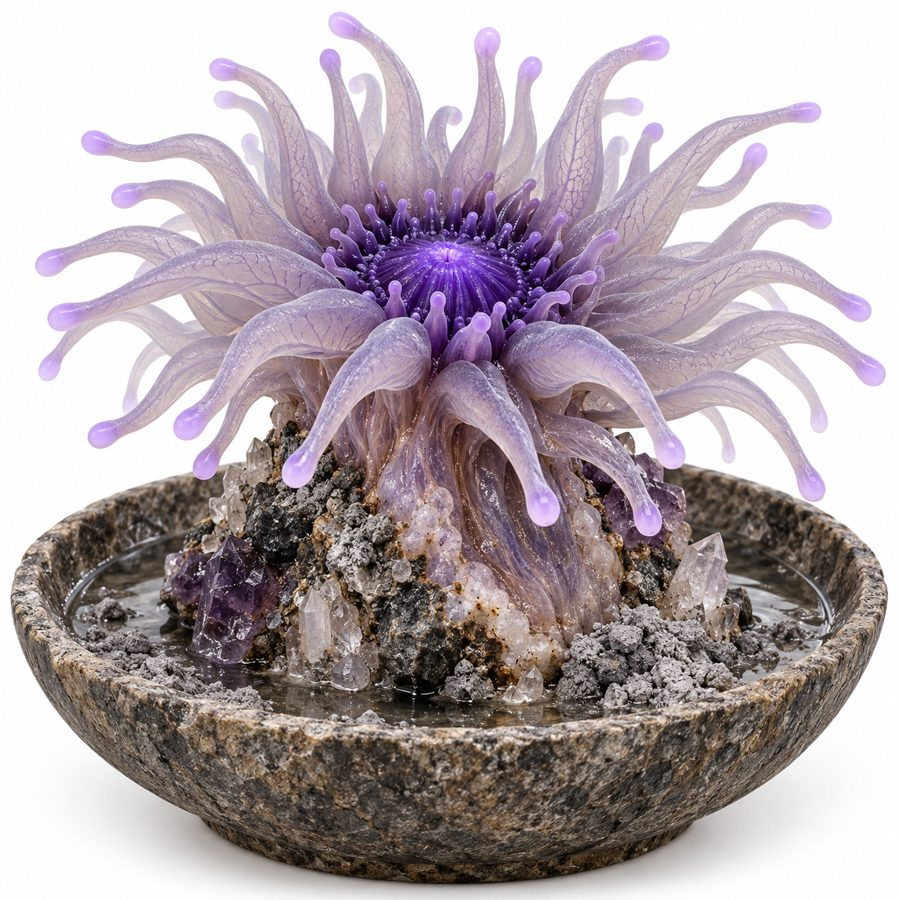
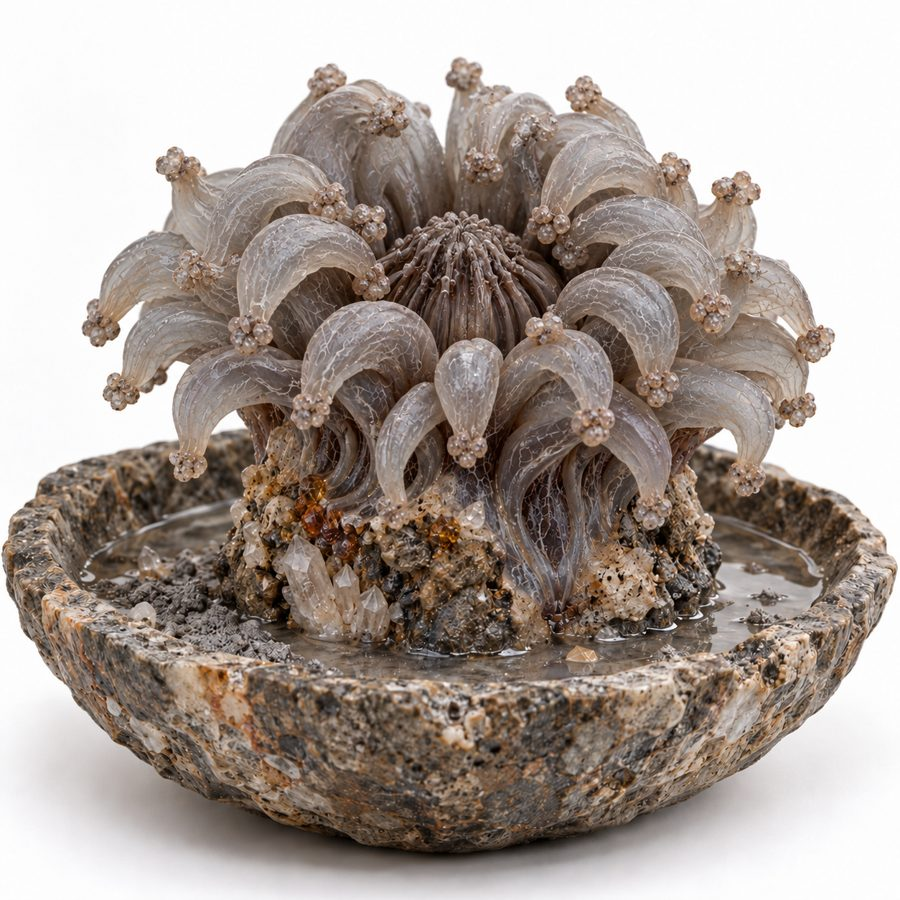

Xathaeli
The rock-flower timekeeper. Ordinary life on Ishphaeno is timed by it, not by any celestial body.
- Group
- Domestic and companion
- Tags
- timekeeper household light-storing
- Form
- Anemone-like: tentacles that catch light and a central body that pulses and changes color. A native organism, not aquatic. Canon
- Kept in
- Open ceramic or stone vessels in homes, shops, government buildings and on ships. Canon
- Wild
- Colonies on humid rock: cave mouths, cliff faces near underground water, mist zones. They can grow larger, and vary in brightness and pulse strength, but keep the same timing as kept ones. Decided
- Care
- Water and ash sprinkled twice per Ishphaeno week. Ash gives nitrogen and magnesium compounds. Canon
Reading the day
It cycles through four colors, each lasting 200 minutes. Color shows the quarter, pulsing shows which half, and pulse speed shows how close the change is. Canon
| Color | Quarter | Feels like |
|---|---|---|
| Warm amber | 1st | Morning |
| Soft white | 2nd | Midday |
| Cool blue | 3rd | Afternoon and evening |
| Deep violet | 4th | Night |
Light and the symbiont
- A Xathaeli is an obligate symbiosis. It hosts light-harvesting symbionts in its tissue and cannot live without them. The symbiont is the clock and the host is the body, so every Xathaeli syncs to the aurora the same way. Decided
- Households set them out in the aurora band to charge. A full charge lasts about one violet-black season (13 to 15 Ishphaeno weeks). Decided
- A low charge dims the tentacle tips and can slow or stall the cycle.
The canary
Near gas, a Xathaeli goes grey and curls. The water in its vessel takes up the gas and changes chemistry. Wild colonies near the death lake give the first warning, and a grey household Xathaeli is the cue to go to high ground. Decided
The four colors, and grey




